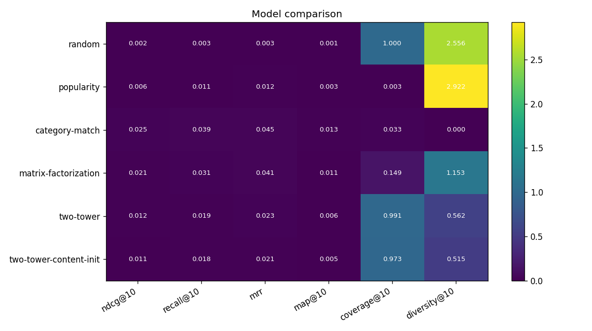
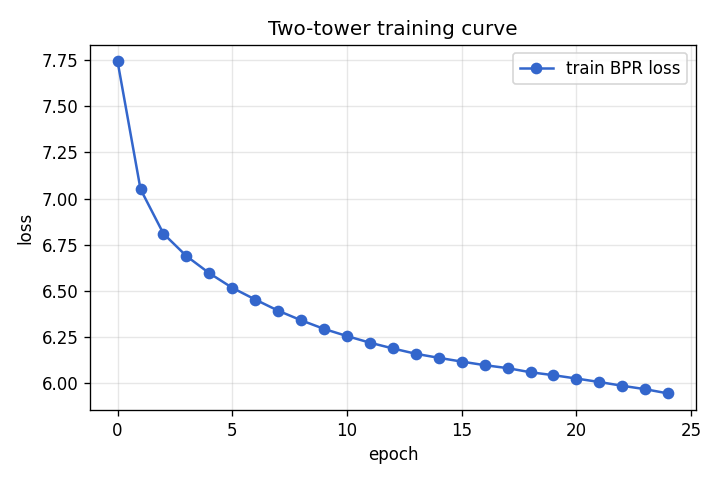
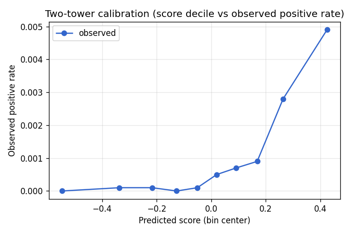

Six models, real US-nonprofit corpus from ProPublica, synthetic giving patterns. make bench reproduces every number on this page in ~1.5 min on a CPU laptop.
Metrics are mean-over-users. Higher is better for ranking metrics. coverage@10 = fraction of org corpus appearing in any user's top-10; diversity@10 = mean intra-list category entropy (higher = more diverse). The centerpiece two-tower row is highlighted.
| Model | ndcg@10 | recall@10 | mrr | map@10 | coverage@10 | diversity@10 | cold_user_ndcg@10 | cold_org_recall@10 |
|---|---|---|---|---|---|---|---|---|
| random | 0.0015 | 0.0026 | 0.0033 | 0.0007 | 1.0000 | 2.5559 | 0.0005 | 0.0000 |
| popularity | 0.0064 | 0.0105 | 0.0119 | 0.0031 | 0.0033 | 2.9219 | 0.0074 | 0.0000 |
| category-match | 0.0255 | 0.0392 | 0.0449 | 0.0129 | 0.0333 | 0.0000 | 0.0158 | 0.0000 |
| matrix-factorization | 0.0212 | 0.0310 | 0.0406 | 0.0107 | 0.1493 | 1.1531 | 0.0085 | 0.0000 |
| two-tower | 0.0120 | 0.0193 | 0.0231 | 0.0059 | 0.9913 | 0.5621 | 0.0113 | 0.1667 |
| two-tower-content-init | 0.0109 | 0.0178 | 0.0211 | 0.0053 | 0.9730 | 0.5146 | 0.0104 | 0.0833 |

Pass/fail assertions modeled on the deep-dive's "synthetic users with known preference profiles" pattern. They gate the build — a real failure here means the recommender is doing the wrong thing on at least one well-defined user archetype.
PyTorch user-tower + org-tower with in-batch sampled-softmax + popularity-weighted negative sampling. L2-normalized outputs, FAISS exact inner-product for top-K retrieval. The two-tower-content-init ablation initializes the org tower from sentence-transformers/all-MiniLM-L6-v2 embeddings before fine-tuning.


Fixed seeds, pinned dependencies (bench/requirements.txt), CPU-only by contract. Same git SHA → same metrics.json modulo runtime.